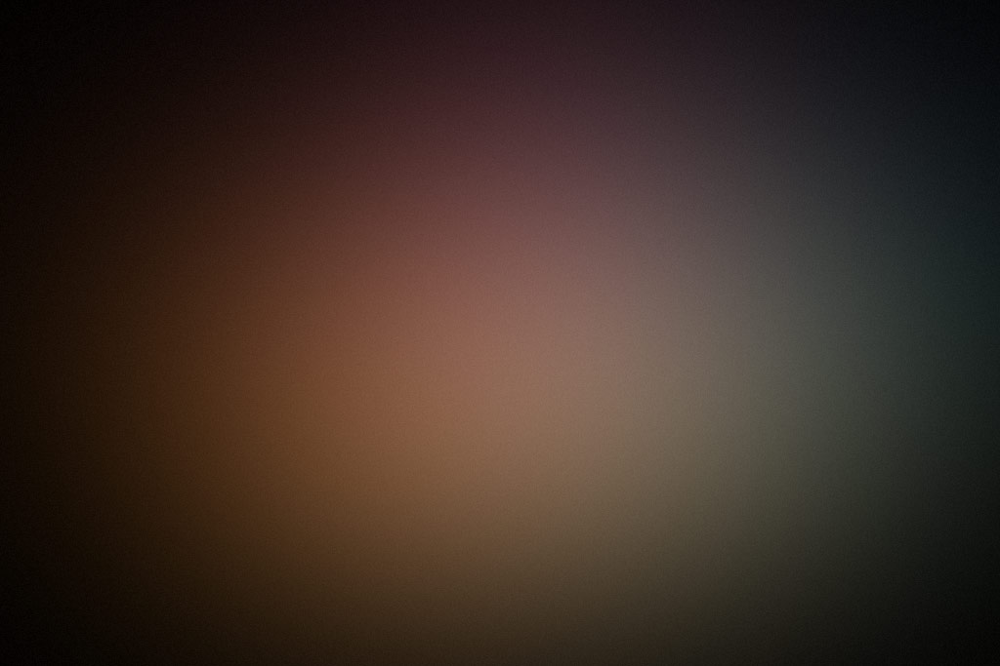


<!DOCTYPE html>
<html>
  <head>
    <meta http-equiv="Content-Type" content="text/html; charset=utf-8">
    <meta http-equiv="content-language" content="en-EN" />
    
    <title>JEELIZ FACE FILTER : BABYLON.JS CUBE DEMO</title>
    
    <!-- INCLUDE JEELIZ FACEFILTER SCRIPT -->
    <script src="assets/dist/jeelizFaceFilter.js"></script>

    <!-- INCLUDE BABYLON.JS
    this is a heavy version of Babylon.js, including many features
    Build you own minified version of Babylon.js on https://www.babylonjs.com/versionbuilder/
    -->
    <script src="assets/libs/babylonjs/v3_1/babylon.custom.js"></script>

    <!-- INCLUDE DEMO SCRIPT -->
    <script src="assets/demos/babylonjs/cube/demo_cube.js"></script>

    <!-- INCLUDE FORK ME ON GITHUB BANNER -->
    <script src="assets/demos/appearance/appearance/widget.js"></script>

    <link rel="stylesheet" href="assets/demos/appearance/style.css" type="text/css" />

    <!-- BABYLONJS CUSTOM SHADER MATERIAL GLSL CODES : -->
    <script type="application/vertexShader" id="videoMatVertexShaderCode">
      attribute vec3 position;
      varying vec2 vUV;

      void main(void){
        gl_Position=vec4(position, 1.);
        vUV=0.5+0.5*position.xy;
      }
    </script>

    <script type="application/fragmentShader" id="videoMatFragmentShaderCode">
      precision lowp float;
      uniform sampler2D samplerVideo;
      varying vec2 vUV;

      void main(void){
        gl_FragColor=texture2D(samplerVideo, vUV);
      }
    </script>

  </head>
  
  <body onload="main()" style='color: white'>
    <canvas width="600" height="600" id='jeeFaceFilterCanvas'></canvas>
  </body>
</html>
 
 

<!-- <!DOCTYPE html> -->
<!-- <html> -->
<!-- <head> -->
    <!-- <meta charset="utf-8" /> -->
    <!-- <title>HTML5</title> -->
    <!-- <link href="assets/css/bootstrap.css" rel="stylesheet"> -->
    <!-- <style> -->
        <!-- .col-sm, .modal-body { -->
            <!-- padding: 0; -->
        <!-- } -->

        <!-- .close { -->
            <!-- width: 50px; -->
            <!-- height: 50px; -->
            <!-- margin-left: auto; -->
            <!-- margin-right: 0; -->
        <!-- } -->

        <!-- .modal { -->
            <!-- padding-left: 0px !important; -->
        <!-- } -->

        <!-- .modal-content { -->
            <!-- border: 0; -->
            <!-- border-radius: 0; -->
        <!-- } -->

        <!-- .position-absolute { -->
            <!-- right: 0; -->
            <!-- left: 0; -->
        <!-- } -->

        <!-- .modal-dialog { -->
            <!-- width: 100%; -->
            <!-- margin: 0; -->
            <!-- max-width: none; -->
        <!-- } -->

        <!-- .main-wrapper { -->
            <!-- height: 100vh; -->
        <!-- } -->

        <!-- .modal-footer { -->
            <!-- height: 10vh; -->
            <!-- padding: 0px; -->
            <!-- width: 95%; -->
            <!-- border: 0; -->
        <!-- } -->

        <!-- .fixed-bottom { -->
            <!-- right: auto; -->
            <!-- left: auto; -->
        <!-- } -->

        <!-- .section { -->
            <!-- height: 100%; -->
            <!-- display: flex; -->
            <!-- flex-direction: column; -->
            <!-- justify-content: center; -->
            <!-- align-items: center; -->
        <!-- } -->
    <!-- </style> -->

    <!-- <script src="assets/js/jquery-3.5.1.min.js"></script> -->
    <!-- <!-- Подключаем Bootstrap JS --> -->
    <!-- <script src="assets/js/bootstrap.min.js"></script> -->
    <!-- <script type="text/javascript"> -->
        <!-- $(document).ready(function () { -->
            <!-- $("#opener").click(function () { -->
                <!-- $('#exampleModal').modal('show'); -->
            <!-- }); -->
        <!-- }); -->
    <!-- </script> -->

    <!-- <script src="assets/dist/jeelizFaceFilter.js"></script> -->
    <!-- <script src="assets/libs/babylonjs/v3_1/babylon.custom.js"></script> -->
    <!-- <script src="assets/presets/demo_cube.js"></script> -->

    <!-- <script type="application/vertexShader" id="videoMatVertexShaderCode"> -->
      <!-- attribute vec3 position; -->
      <!-- varying vec2 vUV; -->

      <!-- void main(void){ -->
        <!-- gl_Position=vec4(position, 1.); -->
        <!-- vUV=0.5+0.5*position.xy; -->
      <!-- } -->
    <!-- </script> -->

    <!-- <script type="application/fragmentShader" id="videoMatFragmentShaderCode"> -->
      <!-- precision lowp float; -->
      <!-- uniform sampler2D samplerVideo; -->
      <!-- varying vec2 vUV; -->

      <!-- void main(void){ -->
        <!-- gl_FragColor=texture2D(samplerVideo, vUV); -->
      <!-- } -->
    <!-- </script> -->

<!-- </head> -->
<!-- <body onload="main()"> -->
	<!-- <canvas width="600" height="600" id='jeeFaceFilterCanvas'></canvas> -->
    
	<!-- <div class="container-fluid"> -->
        <!-- <div class="row"> -->
            <!-- <div class="col-sm"> -->
                <!-- <div class="container-fluid"> -->
                    <!--  -->
                    <!-- <div id="opener" class="opener position-absolute h-100"></div> -->
                <!-- </div> -->

            <!-- </div> -->
            <!-- <div class="col-sm"> -->
                <!--  -->
            <!-- </div> -->
            <!-- <div class="col-sm"> -->
                <!--  -->
            <!-- </div> -->
        <!-- </div> -->


        <!-- <!-- Modal --> -->
        <!-- <div class="modal" id="exampleModal" tabindex="-1" role="dialog" aria-labelledby="exampleModalLabel" aria-hidden="true"> -->
            <!-- <div class="modal-dialog h-100" role="document"> -->
                <!-- <div class="modal-content"> -->
                    <!-- <div class="modal-body"> -->


                        <!-- <div class="main-wrapper"> -->
                            <!-- <div class="section col-xs-9"> -->

                            <!-- </div> -->
                        <!-- </div> -->


                    <!-- </div> -->

                    <!-- <button type="button" class="close position-absolute" data-dismiss="modal" aria-label="Close"> -->
                        <!-- <span aria-hidden="true">&times;</span> -->
                    <!-- </button> -->

                    <!-- <div class="modal-footer fixed-bottom"> -->
                        <!-- <button type="button" class="btn btn-secondary" data-dismiss="modal">Закрыть</button> -->
                    <!-- </div> -->
                <!-- </div> -->
            <!-- </div> -->
        <!-- </div> -->
<!-- </body> -->
<!-- </html> -->